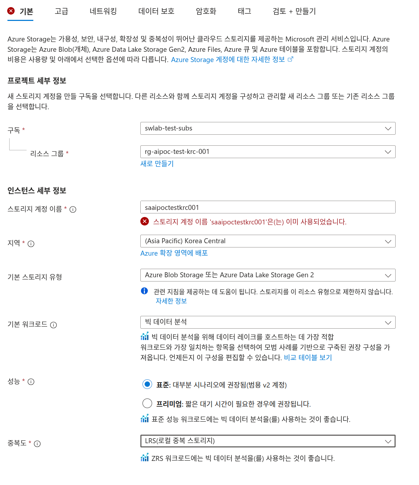
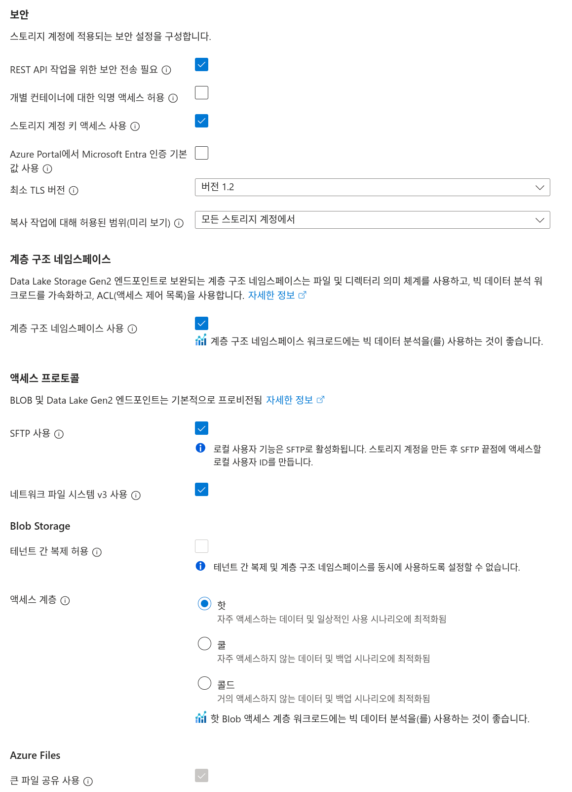
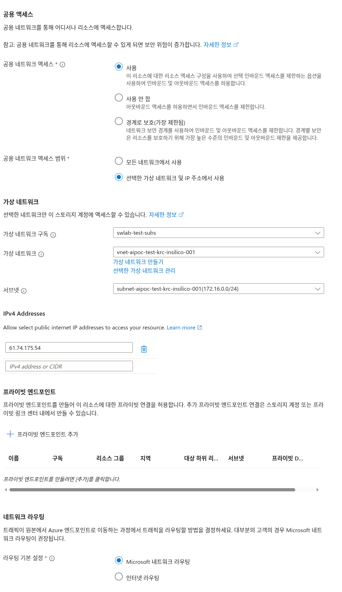
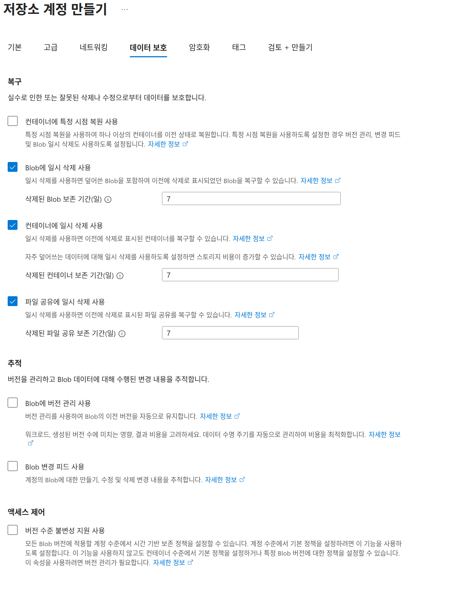

1 스토리지 계정 생성
- Agent 개발을 위한 Data Lake로서 Azure Blob Storage를 사용할 계획
- Blob (Binary Large Object): 이미지, 비디오, 문서, 로그 파일 등 모든 종류의 비구조화된 데이터를 저장하는 객체 스토리지다. 파일 시스템과 달리 계층 구조 없이 평면적으로 저장되며, 각 파일은 고유한 URL을 통해 접근한다.
- Azure Blob Storage vs Data Lake Storage Gen2:
- Blob Storage: 기본적인 객체 스토리지로, REST API를 통해 파일을 업로드/다운로드한다.
- Data Lake Gen2: Blob Storage에 계층 구조 네임스페이스를 추가하여 폴더/파일 개념을 도입하고, POSIX 호환 ACL, 원자적 디렉터리 작업, 빅데이터 분석 도구(Hadoop, Spark)와의 최적화된 통합을 제공한다.
- Blob (Binary Large Object): 이미지, 비디오, 문서, 로그 파일 등 모든 종류의 비구조화된 데이터를 저장하는 객체 스토리지다. 파일 시스템과 달리 계층 구조 없이 평면적으로 저장되며, 각 파일은 고유한 URL을 통해 접근한다.
- Azure Portal에서 Storage Account를 생성한다.
1.1 기본 설정
1.1.1 프로젝트 세부 정보

구독(Subscription)
- 설명: 사용할 Azure 구독을 선택한다.
- 입력 값: swlab-test-subs
리소스 그룹(Resource Group)
- 설명: 스토리지 계정을 포함할 리소스 그룹을 선택하거나 새로 만든다.
- 입력 값: rg-aipoc-test-krc-001
1.1.2 인스턴스 세부 정보
스토리지 계정 이름
- 설명: 전역적으로 고유한 스토리지 계정 이름을 입력한다 (3-24자, 소문자와 숫자만 사용 가능).
- 논리적 의미: storage-acount-ai-poc-test-korea-central-001
- 입력 값: saaipoctestkrc001
지역(Region)
- 설명: 스토리지 계정이 생성될 Azure 데이터 센터 위치를 선택한다.
- 입력 값: (Asia Pacific) Korea Central
기본 스토리지 유형
- 설명: 사용할 스토리지 서비스 유형을 선택한다. 이 선택은 Azure가 최적화된 권장 구성을 제시하는 기준이 되며, 실제로는 다른 스토리지 서비스(Table, Queue 등)도 함께 사용할 수 있다.
- 입력 값:
Azure Blob Storage 또는 Azure Data Lake Storage Gen 2
- 이 설정은 관련 지침을 제공하는 데 도움이 되지만, 실제로 스토리지를 이 특정 유형으로만 제한하지는 않는다.
- 참고: Data Lake Gen2 기능을 활성화하려면 이후 ‘계층 구조 네임스페이스’ 옵션을 반드시 활성화해야 한다.
기본 워크로드
- 설명: 스토리지를 주로 사용할 목적(사용 패턴)을 선택한다. Azure는 선택한 워크로드에 맞춰 최적화된 설정을 자동으로 권장한다.
- 빅 데이터 분석: 대용량 데이터를 Hadoop, Spark 등의 도구로 분석하는 경우
- 백업 및 아카이브: 장기 보관용 데이터 저장
- 미디어 스트리밍: 비디오/오디오 파일 제공
- 일반 용도: 특정 용도 없이 범용적으로 사용
- 입력 값: 빅 데이터 분석
- 참고: 이 설정은 권장 구성을 제시할 뿐이며, 실제 사용 방식을 제한하지 않는다.
성능(Performance)
- 설명: 스토리지 계정의 성능 계층을 선택한다.
- 표준: 대부분 시나리오에 권장됨 (범용 v2 계정)
- 프리미엄: 짧은 대기 시간이 필요한 경우에 권장됨
- 선택 값: 표준: 대부분 시나리오에 권장됨(범용 v2 계정)
- 참고: 표준 성능 워크로드에는 빅 데이터 분석(를) 사용하는 것이 좋다.
중복도(Redundancy)
- 설명: 데이터 내구성을 위한 복제 전략을 선택한다. 하드웨어 장애 또는 재해 발생 시 데이터 손실을 방지하기 위해 여러 복사본을 유지한다.
- LRS (Locally Redundant Storage): 동일 데이터센터 내에서 3개 복사본 유지. 가장 저렴하지만, 데이터센터 전체 장애 시 데이터 손실 가능.
- ZRS (Zone-Redundant Storage): 동일 지역 내 3개의 가용성 영역(Availability Zone)에 걸쳐 복제. 데이터센터 하나가 다운되어도 데이터 접근 가능.
- GRS (Geo-Redundant Storage): 주 지역(예: Korea Central)에 LRS + 보조 지역(예: Korea South)에 LRS로 총 6개 복사본. 지역 재해 대비.
- RA-GRS (Read-Access Geo-Redundant Storage): GRS + 보조 지역에서도 읽기 가능. 주 지역 장애 시에도 데이터 읽기 가능.
- 선택 값: LRS(로컬 중복 스토리지)
- 참고: 고가용성이 중요한 프로덕션 환경에서는 ZRS 이상을 권장한다.
1.2 고급 설정

1.2.1 보안
REST API 작업을 위한 보안 전송 필요
- 설명: HTTPS를 통한 보안 연결만 허용한다.
- 선택 값: 체크됨
개별 컨테이너에 대한 익명 액세스 허용
- 설명: 익명 Blob 액세스를 컨테이너 수준에서 허용할지 여부를 설정한다.
- 선택 값: 체크 안 됨
스토리지 계정 키 액세스 사용
- 설명: 공유 키를 통한 스토리지 계정 액세스를 허용한다.
- 선택 값: 체크됨
Azure Portal에서 Microsoft Entra 인증 기본값 사용
- 설명: Azure Portal 액세스 시 Microsoft Entra ID를 기본 인증 방법으로 사용한다.
- 참고: Microsoft Entra는 Azure AD(Active Directory, window에서의 사용자의 계정정보를 담아 놓는 장소)를 zero trust(모든 보안 인증 실시 개념)의 새로운 브랜드명이다.
- 네트워크 용어 구분:
- Microsoft Entra: 보안, 인증, AD 등이 포함된 서비스 제품군의 상위 개념
- 인터넷 (Internet): 전 세계 컴퓨터들이 TCP/IP 프로토콜로 연결된 공용 네트워크
- 인트라넷 (Intranet): 조직 내부에서만 접근 가능한 사설 네트워크 (회사 내부망)
- 엑스트라넷 (Extranet): 인트라넷을 특정 외부 조직(파트너사, 협력업체)에 제한적으로 개방한 네트워크
- Microsoft Entra: 보안, 인증, AD 등이 포함된 서비스 제품군의 상위 개념
- 참고: Microsoft Entra는 Azure AD(Active Directory, window에서의 사용자의 계정정보를 담아 놓는 장소)를 zero trust(모든 보안 인증 실시 개념)의 새로운 브랜드명이다.
- 선택 값: 체크 안 됨
최소 TLS 버전
- 설명: 클라이언트에서 요청하는 최소 TLS(Transport Layer Security, 전송 계층 보안) 버전을 설정한다.
- TLS: HTTPS 통신을 암호화하는 프로토콜로, SSL의 후속 버전이다. 데이터 전송 시 도청, 변조를 방지한다.
- TLS 1.2: 2008년 발표된 버전으로, 현재 업계 표준. 대부분의 보안 정책에서 최소 요구사항이다.
- TLS 1.3: 2018년 발표된 최신 버전으로, 더 빠르고 안전하다.
- 선택 값: 버전 1.2
- 참고: TLS 1.0/1.1은 보안 취약점이 있어 사용이 권장되지 않는다.
복사 작업에 대해 허용된 범위(미리 보기)
- 설명: 데이터 복사 작업의 허용 범위를 지정한다.
- 선택 값: 모든 스토리지 계정에서
1.2.2 계층 구조 네임스페이스
계층 구조 네임스페이스는 Blob Storage를 Data Lake Storage Gen2로 변환하는 핵심 기능이다. 활성화하면 파일/디렉터리 구조를 사용할 수 있고, POSIX 호환 ACL을 통한 세밀한 권한 제어가 가능하며, 빅 데이터 분석 도구(Spark, Hadoop 등)와의 호환성이 향상된다.
계층 구조 네임스페이스 사용
- Blob Storage를 Data Lake Gen2로 업그레이드한다. 폴더/파일 개념, POSIX ACL, 원자적 디렉터리 작업을 지원한다.
- Blob: Binary Large Object의 약자로, 비구조화된 데이터를 저장하는 객체
- ACL (Access Control List): 파일/디렉터리별로 읽기, 쓰기, 실행 권한을 사용자/그룹별로 세밀하게 지정하는 접근 제어 목록. Linux/Unix의 chmod와 유사한 개념.
- 원자적 디렉터리 작업: 디렉터리 이름 변경, 이동, 삭제가 단일 작업(All-or-Nothing)으로 처리됨. 작업 도중 실패하면 원래 상태로 롤백되어 데이터 일관성이 보장된다.
- Blob: Binary Large Object의 약자로, 비구조화된 데이터를 저장하는 객체
- 선택 값: 체크됨
- 참고: 빅 데이터 분석 워크로드에 필수적이며, 한 번 활성화하면 비활성화할 수 없다.
1.2.3 액세스 프로토콜
BLOB 및 Data Lake Gen2 엔드포인트는 기본적으로 제공되며, 추가로 SFTP 및 NFS 프로토콜을 활성화할 수 있다.
SFTP 사용
- 설명: SFTP 프로토콜을 통한 파일 전송을 활성화한다.
- SFTP (SSH File Transfer Protocol): SSH 암호화를 사용하는 안전한 파일 전송 프로토콜. FTP와 달리 모든 데이터가 암호화되어 전송된다. FileZilla 등의 FTP 클라이언트로 접속 가능.
- 선택 값: 체크됨
- 참고: SFTP 활성화 후 별도로 로컬 사용자 계정을 생성하고 SSH 키 또는 비밀번호를 설정해야 접속 가능하다.
네트워크 파일 시스템 v3 사용
- 설명: NFS v3 프로토콜을 사용하여 파일 시스템을 마운트한다.
- NFS (Network File System): 네트워크를 통해 원격 서버의 파일 시스템을 로컬 디스크처럼 마운트하여 사용하는 프로토콜. Linux/Unix 서버에서 주로 사용하며, mount 명령으로 마운트 후 일반 파일처럼 읽기/쓰기가 가능하다.
- 선택 값: 체크됨
1.2.4 Blob Storage
테넌트 간 복제 허용
- 설명: 다른 Azure AD 테넌트 간 Blob 복제를 허용한다.
- Azure AD (Active Directory): Microsoft의 클라우드 기반 ID 및 접근 관리 서비스. 사용자 인증, 권한 관리, SSO(Single Sign-On) 등을 제공한다.
- 테넌트 (Tenant): Azure AD의 전용 인스턴스로, 조직 단위를 의미한다. 회사마다 별도의 테넌트를 가지며, 테넌트 간에는 기본적으로 리소스가 격리된다. (예: 삼성 테넌트, LG 테넌트)
- Azure AD (Active Directory): Microsoft의 클라우드 기반 ID 및 접근 관리 서비스. 사용자 인증, 권한 관리, SSO(Single Sign-On) 등을 제공한다.
- 선택 값: 체크 안 됨
- 참고
- 테넌트 간 복제 및 계층 구조 네임스페이스를 동시에 사용하도록 설정할 수 없다.
- Microsoft Entra
- Microsoft의 통합 ID 및 액세스 관리 제품군. 2023년에 Azure Active Directory(Azure AD)를 Microsoft Entra ID로 리브랜딩했다.
- Microsoft의 통합 ID 및 액세스 관리 제품군. 2023년에 Azure Active Directory(Azure AD)를 Microsoft Entra ID로 리브랜딩했다.
- Microsoft Entra 제품군 구성:
- Microsoft Entra ID: (기존 Azure AD) 클라우드 기반 사용자 인증 및 권한 관리
- Microsoft Entra Permissions Management: 멀티 클라우드(Azure, AWS, GCP) 권한 관리
- Microsoft Entra Verified ID: 분산 ID 및 검증 서비스
- Microsoft Entra External ID: B2C(고객 대상) 및 B2B(파트너사) ID 관리
- Microsoft Entra ID: (기존 Azure AD) 클라우드 기반 사용자 인증 및 권한 관리
- Microsoft Entra 핵심 기능:
- SSO (Single Sign-On): 한 번 로그인으로 여러 서비스 접근
- MFA (Multi-Factor Authentication): 다단계 인증
- 조건부 액세스: 위치, 디바이스, 위험 수준에 따른 접근 제어
- ID 보호: 위험한 로그인 시도 감지 및 차단
- SSO (Single Sign-On): 한 번 로그인으로 여러 서비스 접근
- 실무 사용 예:
- 회사 직원이 Azure Portal, Microsoft 365, 사내 시스템에 하나의 계정으로 로그인
- 외부에서 접속 시 추가 인증 요구
- 특정 국가에서의 접속 차단
- 회사 직원이 Azure Portal, Microsoft 365, 사내 시스템에 하나의 계정으로 로그인
- 테넌트 간 복제 및 계층 구조 네임스페이스를 동시에 사용하도록 설정할 수 없다.
액세스 계층
- 설명: 데이터 액세스 빈도에 따른 기본 저장소 계층을 선택한다.
- 핫: 자주 액세스하는 데이터 및 일상적인 사용 시나리오에 최적화됨
- 쿸: 자주 액세스하지 않는 데이터 및 백업 시나리오에 최적화됨
- 콜드: 거의 액세스하지 않는 데이터 및 백업 시나리오에 최적화됨
- 선택 값: 핫
- 참고: 핫 Blob 액세스 계층 워크로드에는 빅 데이터 분석(를) 사용하는 것이 좋다.
1.2.5 Azure Files
큰 파일 공유 사용
- 설명: 최대 100TiB 용량의 대용량 파일 공유를 지원한다.
- TiB (Tebibyte): 2^40 바이트 = 1,099,511,627,776 바이트 ≈ 1.1조 바이트.
- 일반적으로 말하는 TB(Terabyte, 10^12 = 1조 바이트)와 약간 다르며, 실제로는 TiB가 약 9.95% 더 크다. (1 TiB = 1.0995 TB)
- TiB (Tebibyte): 2^40 바이트 = 1,099,511,627,776 바이트 ≈ 1.1조 바이트.
- 선택 값: 체크됨 (비활성화됨)
1.3 네트워킹 설정

1.3.1 공용 액세스
공용 네트워크를 통해 어디서나 리소스에 액세스한다.
참고: 공용 네트워크를 통해 리소스에 액세스할 수 있게 되면 보안 위험이 증가한다.
공용 네트워크 액세스
- 설명: 공용 인터넷에서 스토리지 계정에 대한 액세스 권한을 설정한다.
- 선택 값: 사용
- 옵션:
- 사용: 네트워크 액세스 규칙(방화벽)을 통해 특정 가상 네트워크 및 IP 주소만 허용하도록 제한할 수 있다. 인바운드(스토리지 접근) 및 아웃바운드(복제 등) 트래픽을 모두 허용한다.
- 사용 안 함: 모든 공용 인터넷 액세스를 차단한다. Private Endpoint를 통해서만 접근 가능하며, 아웃바운드 복제는 허용된다.
- 경계로 보호(가장 제한됨): Azure Network Security Perimeter를 사용하여 인바운드 및 아웃바운드 모두 엄격하게 제한한다. 가장 높은 수준의 네트워크 격리를 제공한다.
공용 네트워크 액세스 범위
- 설명: 공용 네트워크를 통해 액세스할 수 있는 리소스의 범위를 지정한다.
- 선택 값: 선택한 가상 네트워크 및 IP 주소에서 사용
- 옵션:
- 모든 네트워크에서 사용
- 선택한 가상 네트워크 및 IP 주소에서 사용
1.3.2 가상 네트워크
선택한 네트워크만 이 스토리지 계정에 액세스할 수 있다.
가상 네트워크 구독
- 설명: 가상 네트워크가 속한 Azure 구독을 선택한다.
- 입력 값: swlab-test-subs
가상 네트워크
- 설명: 스토리지 계정에 액세스할 수 있는 가상 네트워크를 선택한다.
- 입력 값: vnet-aipoc-test-krc-insilico-001
- 링크: [가상 네트워크 만들기] / [선택한 가상 네트워크 관리]
서브넷
- 설명: 가상 네트워크 내에서 액세스를 허용할 서브넷을 선택한다.
- 입력 값: subnet-aipoc-test-krc-insilico-001(172.16.0.0/24)
1.3.3 방화벽 - 허용 IP 주소
특정 공용 IP 주소에서만 스토리지 계정 접근을 허용한다.
허용된 IP 주소
- 설명: 스토리지 계정에 액세스할 수 있는 공용 IP 주소를 지정한다. CIDR 표기법(예: 203.0.113.0/24) 또는 개별 IP 주소 입력이 가능하다.
- 입력 값: 61.74.175.54 (예시)
이 값을 자신의 로컬 PC Public IP로 설정해야 Azure Portal에서 직접 파일 업로드/다운로드가 가능하다. 공용 IP는 https://www.whatismyip.com에서 확인할 수 있다.
1.3.4 프라이빗 엔드포인트
프라이빗 엔드포인트
- 설명: 프라이빗 엔드포인트를 만들어 이 리소스에 대한 프라이빗 연결을 허용한다. 추가 프라이빗 엔드포인트 연결은 스토리지 계정 또는 프라이빗 링크 센터 내에서 만들 수 있다.
- 선택 값: [+ 프라이빗 엔드포인트 추가] 클릭 가능
- 상태: 프라이빗 엔드포인트를 만들려면 (추가를 클릭한다)
1.3.5 네트워크 라우팅
트래픽이 원본에서 Azure 엔드포인트로 이동하는 과정에서 트래픽을 라우팅할 방법을 결정하세요. 대부분의 고객의 경우 Microsoft 네트워크 라우팅이 권장된다.
라우팅 기본 설정
- 설명: 트래픽이 원본에서 Azure 엔드포인트로 이동하는 과정에서 트래픽을 라우팅할 방법을 결정한다.
- 선택 값: Microsoft 네트워크 라우팅
- 옵션:
- ⭕ Microsoft 네트워크 라우팅
- ⚪ 인터넷 라우팅
1.4 데이터 보호 설정

1.4.1 복구
일시 삭제(Soft Delete) 기능은 실수로 삭제된 데이터를 지정된 기간 동안 보존하여 복구할 수 있게 한다.
Blob에 일시 삭제 사용
- 설명: 일시 삭제를 사용하면 덮어쓴 Blob을 포함하여 이전에 삭제로 표시되었던 Blob을 복구할 수 있다.
- 선택 값: ☑ 체크됨
- 삭제된 Blob 보존 기간(일): 7
컨테이너에 일시 삭제 사용
- 설명: 일시 삭제를 사용하면 이전에 삭제로 표시된 컨테이너를 복구할 수 있다.
- 선택 값: ☑ 체크됨
- 삭제된 컨테이너 보존 기간(일): 7
- 참고: 자주 덮어쓰는 데이터에 대해 일시 삭제를 사용하도록 설정하면 스토리지 비용이 증가할 수 있다.
파일 공유에 일시 삭제 사용
- 설명: 일시 삭제를 사용하면 이전에 삭제로 표시된 파일 공유를 복구할 수 있다.
- 선택 값: ☑ 체크됨
- 삭제된 파일 공유 보존 기간(일): 7
1.4.2 추적
Blob에 버전 관리 사용
- 설명: 버전 관리를 사용하여 Blob의 이전 버전을 자동으로 유지한다. 각 수정마다 새로운 버전이 생성된다.
- 선택 값: 체크 안 됨
- 참고: 빈번한 수정이 발생하는 파일의 경우 버전 수가 급증하여 스토리지 비용이 크게 증가할 수 있다. Lifecycle Management 정책으로 오래된 버전을 자동 삭제하여 비용을 최적화할 수 있다.
Blob 변경 피드 사용
- 설명: 계정의 Blob에 대한 만들기, 수정 및 삭제 변경 내용을 추적한다.
- 선택 값: 체크 안 됨
1.4.3 액세스 제어
버전 수준 불변성 지원 사용
- 설명: 모든 Blob 버전에 적용할 계정 수준에서 시간 기반 보존 정책(WORM - Write Once Read Many)을 설정할 수 있다.
- 선택 값: 체크 안 됨
- 참고: 규정 준수(Compliance)가 필요한 경우 활성화한다. 계정 수준에서 기본 정책을 설정하거나, 컨테이너 수준 또는 특정 Blob 버전별로 개별 정책을 설정할 수 있다. 이 기능을 사용하려면 ’버전 관리’가 활성화되어 있어야 한다.
2 컨테이너 생성 & Blob 파일 업로드
2.1 Azure Portal에서 컨테이너를 생성한다.
컨테이너는 Blob Storage의 논리적 그룹 단위로, 파일 시스템의 최상위 디렉터리와 유사하다.

2.2 디렉터리 추가
계층 구조 네임스페이스가 활성화된 경우, Azure Portal에서 직접 디렉터리(폴더)를 생성하고 관리할 수 있다.
네트워크 설정에서 공용 네트워크 액세스가 ‘사용(Enabled from selected networks)’으로 설정되어 있고, 현재 사용 중인 PC의 공용 IP가 허용 목록에 추가되어 있어야 Azure Portal에서 컨테이너 및 디렉터리에 접근할 수 있다.
사용 안 함(Disabled) 또는 경계로 보호로 설정된 경우, Private Endpoint를 통해서만 접근 가능하다.
폴더 구조는 아래와 같은 구조로 되어있다.
rag-container
├─ code
│ ├─ moduleA
│ ├─ moduleB
│ └─ moduleC
└─ docs
├─ moduleA
├─ moduleB
└─ moduleC2.3 Blob 파일 업로드
Azure Portal의 ‘업로드’ 버튼을 통해 로컬 파일을 Blob Storage에 업로드할 수 있다.

3 VM 내부에서 Blob 파일 접근
NFS v3 프로토콜을 사용하여 Azure Blob Storage를 Linux VM의 파일 시스템으로 마운트한다. 이를 통해 Blob Storage를 로컬 디렉터리처럼 사용할 수 있다.
3.1 NFS 클라이언트 패키지 설치
Ubuntu/Debian 계열 Linux에 NFS 클라이언트를 설치한다.
sudo apt-get update
sudo apt-get install nfs-common4 /etc/fstab 영구 마운트 설정
시스템 재부팅 시에도 자동으로 마운트되도록 /etc/fstab 파일에 마운트 정보를 추가한다.
sudo vi /etc/fstab
# 아래 라인을 파일 끝에 추가
saaipoctestkrc001.blob.core.windows.net:/saaipoctestkrc001/bc-aipoc-test-krc001 /mnt/bc-aipoc-test-krc001 aznfs defaults,sec=sys,vers=3,nolock,proto=tcp,nofail,_netdev 0 0마운트 옵션 설명:
- saaipoctestkrc001.blob.core.windows.net:/saaipoctestkrc001/bc-aipoc-test-krc001: NFS 서버 경로 (스토리지계정명.blob.core.windows.net:/스토리지계정명/컨테이너명)
- /mnt/bc-aipoc-test-krc001: 로컬 마운트 지점 (미리 생성 필요: sudo mkdir -p /mnt/bc-aipoc-test-krc001)
- aznfs: Azure NFS 파일 시스템 타입
- sec=sys: 인증 방식 (시스템 기본 인증 사용)
- vers=3: NFS 프로토콜 버전 3 사용
- nolock: 파일 잠금 비활성화 (성능 향상)
- proto=tcp: TCP 프로토콜 사용
- nofail: 마운트 실패 시에도 부팅 계속 진행
- _netdev: 네트워크 연결 후 마운트 시도
- 0 0: dump 및 fsck 옵션 (백업 및 파일 시스템 체크 비활성화)
4.1 마운트 적용
fstab 설정을 즉시 적용한다.
sudo mount -a